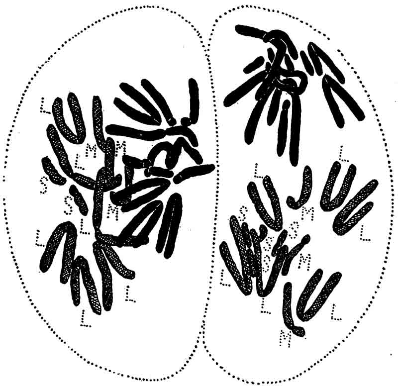
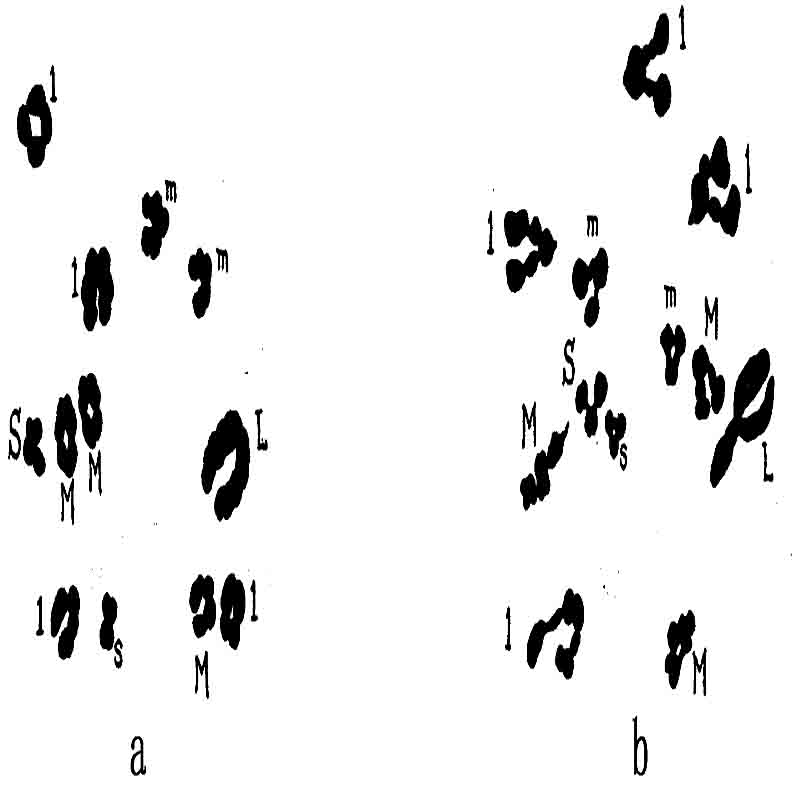
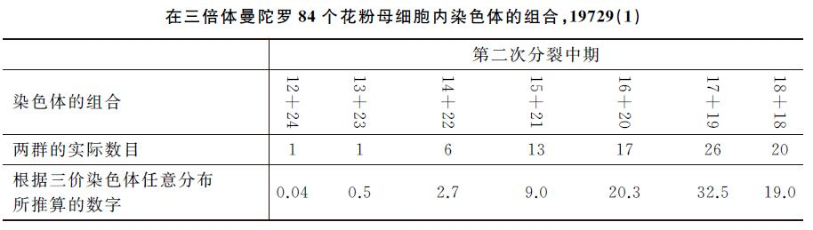

第9章 三倍体
三倍型胚胎既然保持了基因间的平衡状态，所以预料它的发育是会正常的。唯一的不协调的因素，是三组的染色体和遗传下来的胞质分量两者间的关系。我们还不十分明了，这里发生了多少自动调剂作用，但不妨想象，至少在植物里，三倍体的细胞比正常型的细胞会更大一些。
1897年1月5日摩尔根致德里希（Hans Driesch）的几页手稿，摩尔根在此叙述了有关蚯蚓再生的情况。
在近来的著作中也有了许多三倍体的记录，其中有些起源于已知的二倍体，有些出现在栽培植物里，另一些则发生在野生状态下。
Gates和Anne Lutz描述过待霄草（半巨型）的三倍体植株，有21条染色体。以后德弗利、van Overeem和其他学者也描述过待霄草的三倍体。据说，这些三倍体是由二倍型生殖细胞同单倍型生殖细胞融合产生的。
Gates、Geerts和van Overeem分别研究了三倍型染色体在成熟时期内的分布情况。他们看到：虽然在一些例子里，染色体在减数分裂中的分布颇有规则，但是在另一些例子里，若干染色体却被扔掉了、退化了。Lutz女士确实看到三倍体的后代有悬殊。据Gates记载。在有21条染色体的植株中，第一次成熟分裂后的两个细胞“几乎始终”是10条对11条染色体，只是偶尔才有9条对12条。Geerts发现了更多的错乱情况。他谈到有七条染色体经常分别趋入每一极，其余不成对的七条则不规则地分到两极。这项记载很符合于主张七条同七条接合，其余七条孤立无偶的见解。van Overeem谈到在待霄草里，如果用三倍体为母株，结果证明大多数胚珠都有作用，不管无偶的染色体是如何分布的，换句话说，细胞虽有各种不同的染色体组合，但全部或者大多数卵子都能生存，并且可以受精。其结果便是出现了具有许多不同染色体组合的各种各样的植株。另一方面，如果用三倍型待霄草的花粉，结果证明只有含7条或14条染色体的花粉才能发生作用。含中间数目的花粉粒大都无效。
De Mol在栽培的风信子Hyacinth里发现过三倍体。他说：由于被选用为商品的缘故，三倍体的风信子正在代替旧型。三倍体的一些后代含有三倍左右的染色体，它们构成了现代栽培类型的重要部分。风信子一般用球茎繁殖，所以任何特殊品种都能够继续绵延。De Mol研究了正常型和三倍体风信子生殖细胞的成熟分裂（图80）。正常二倍型的染色体有8条长的、4条中等的和4条短的。

图80 风信子花粉母细胞的三倍染色体群（仿Belling）
单倍型生殖细胞的染色体却是4条长的、2条中等的和2条短的。De Mol和Belling都指出了“正常”型减数分裂后的染色体既然每种大小都有两条，所以“正常”型也许已经是一种四倍体。如果真是这样，则所谓三倍体也可能是一种双倍的三倍体，因为它有12条长的、6条中等的和6条小的。
Belling又研究了美人蕉Canna的一个三倍体变种的成熟分裂。各种大小的染色体都是三条接合在一起。当染色体分离时，在每个三条接合染色体当中，一般是两条趋入一极，另一条则趋入另一极，但由于不同类型的染色体之间都是独立分布的，所以分裂后的姊妹细胞中只有极少数才是二倍型和单倍型。
Blakeslee、Belling和Farham报道了一种三倍体曼陀罗。这植株是由四倍体同正常型受精后产生的。正常二倍型有24条染色体（n＝12）（图81a）。三倍型有36条染色体（图81b）。单倍染色体群中有一条特大号（L），4条大号（l），3条大中号（M），2条小中号（m），1条小号（S）和1条特小号（s）。所以二倍型染色体群为2（L+41+3M+2m+1S+1s），而三倍型群则每类各有三倍。

图81 a.二倍体曼陀罗的减数染色体群；b.三倍体曼陀罗的减数染色体群（仿Belling和Blakeslee）
Belling和Blakeslee研究了三倍体的成熟分裂。减数染色体群分为12类，各由三条联合而成，如图81b。在体积关系上，各类三价染色体同二倍体的二价染色体是一样的，即只能由相同的染色体组成，并且联合成图中所示的各种不同方式。两条染色体可能借它们的两端互相连接，第三条则只有一端相连等等。
在第一次分裂时，每一类的三价染色体中有两条走到纺锤体的一极，另一条则走到相反的一极（图75第三列），不同类的三价染色体之间既然是自由组合，所以得出了几种不同的染色体组合。下表表示三倍体曼陀罗84个花粉母细胞所含染色体的数字，结果很符合于根据自由组合所推测的数字。

三倍体的第一次成熟分裂，偶尔不能进行。短时间的低温处理是有利于这种变化的。在第二次分裂时，染色体进行均等分裂（注：均等分裂（oquational division）指一条染色体纵裂为两条，与减数分裂中互相接合的两条染色体的分离不同。——译者注。），结果产生了两个巨型细胞，各有36条染色体。
三倍体一般产生很少的有作用的花粉粒，但是有作用的卵细胞似乎比较常见。例如，三倍体从正常植株受精，其正常型后代（2n）的数目远远超过根据卵子内染色体自由组合假设所预料的数字。
三倍体果蝇是Bridges发现的（图82）。三倍体有三条X染色体，同各类的三条常染色体平衡，所以是雌性。正常这种平衡，产生了正常雌蝇。我们既然知道所有染色体上面的遗传因子，因此有可能利用后代里的性状分布情况，来研究染色体在成熟时期内的行动，也有可能研究交换，以及决定染色体是否是以三条为单位互相配对。

图82 a.正常雌果蝇（二倍体）；b.三倍体果蝇
真正的三倍体果蝇有三组普通染色体，又有三条X染色体。反之，如果只有两条X染色体，则该个体为性中型（注：性中型（intersex）也称中间性。——译者注。）。如果只有一条X，则该个体为超雄性。这些关系如下：
3a+3X＝三倍体雌蝇
3a+2X＝性中型
3a+1X＝超雄性
在雌雄异体的动物里，发现了一种胚胎时期中的三倍体。据报道：蛔虫的二价型雌虫产生含两条染色体的成熟卵子，各个成熟卵子同含一条染色体的单价型精子受精。受精卵发育成胚胎，每个胚胎细胞各有三条染色体。因为在生殖细胞尚未成熟时，胚胎便已从母体逸出，所以没有看到染色体行动上一个最重要的特点，即染色体在接合时期内的联合，一直也没有发现过三倍型的蛔虫成虫。
另一种产生三倍体的方法就是把两个二倍体物种杂交，再把杂种（因为没有接合和减数分裂，所以产生三倍型生殖细胞）回交一个亲型原种。Federley用三种蛾类做过这类的实验，三个物种的染色体数字如下表所示：

头两种杂种有59条染色体（30+29）。当杂种的生殖细胞达到成熟时期，染色体之间没有互相接合。在第一次成熟分裂时，59条染色体各分为两条子染色体。每个子细胞各得59。在第二次成熟分裂时，出现了许多不规则的性状。每条染色体再度分裂成两条，但两条往往不能分离开来。虽然如此，雄虫仍然有部分可孕性，而且像实验结果所证明的，它的一部分生殖细胞有着全部的染色体。杂交一代的雌蛾没有生殖力。
如果把F 1 雌蛾回交一个亲型，例如回交anachoreta种，anachoreta种的成熟卵子有30条染色体，那么，孙代杂种有89条染色体（59+30），因而是一个杂种三倍体。孙代杂种和子代杂种极相类似。前者有两组anachoreta型染色体和一组curtula型染色体。虽然在各个世代中只有半数的染色体彼此接合，然而在某种意义上，它们却是一种永久性的杂种。譬如当含89条染色体的杂种生殖细胞成熟时，两组anachoreta型染色体（30+30）彼此接合，29条curtula型染色体则依然孤立。在第一次分裂中，接合中的anachoreta染色体彼此分离，curtula染色体则各自分裂开来，于是每个子细胞各得59条。在第二次分裂中，59条染色体又各自分裂。因此，生殖细胞各得59条染色体，成为二倍型。只需要继续进行回交，便有可能来产生三倍型个体。不过，在控制情况下利用回交来维持一个三倍体品系，虽然不无可能，但由于在杂种精子发生过程中的紊乱情况，杂种的后代没有生殖力，所以要在自然条件下建立一族永久性的三倍体，一般是做不到的（注：我把这里的叙述有意地简化一点。在F 1 杂种体内，一条或多条染色体有时似乎接合起来。这时染色体或者会发生减数分裂，从而使F 2 杂种的生殖细胞增减一条或多条染色体。）。
三倍型胚胎既然保持了基因间的平衡状态，所以预料它的发育是会正常的。唯一的不协调的因素，是三组的染色体和遗传下来的胞质分量两者间的关系。我们还不十分明了，这里发生了多少自动调剂作用，但不妨想象，至少在植物里，三倍体的细胞比正常型的细胞会更大一些。
其他通过两个野生物种（其中一种有二倍于另一种的染色体）杂交所发生或者产生的三倍体，将于后面一章另作说明。